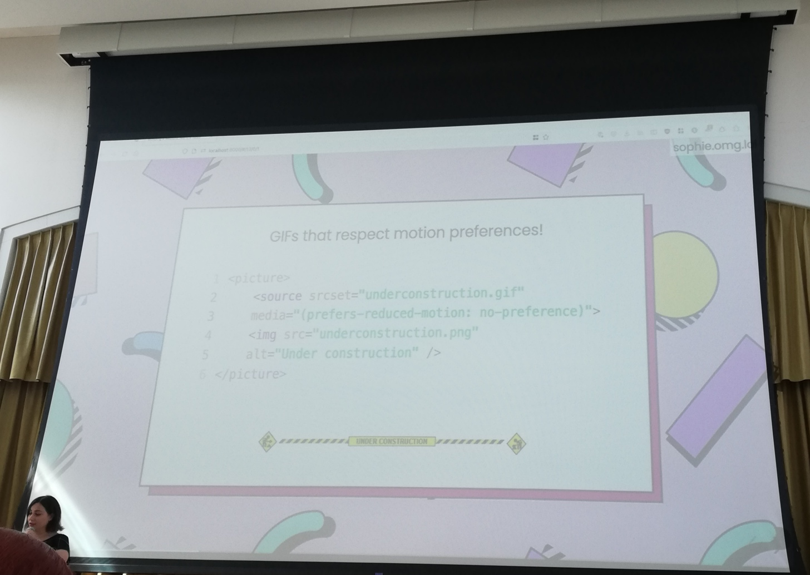
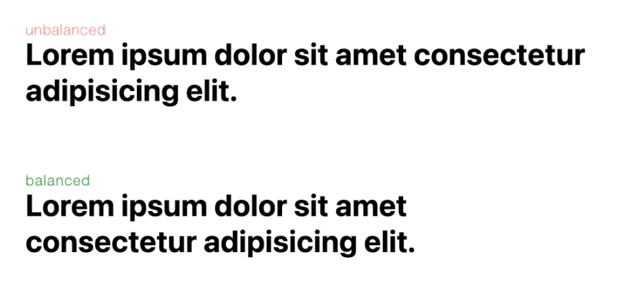

CSS Days
Door: r20222
7/8/9-6-2023
Ik ben naar de CSS days geweest. 1 avond en 2 dagen zijn compleet gevuld met veel presentaties over de ontwikkelingen in het CSS gebied. Ik vond het heel gaaf dat ik mee mocht en heb een heleboel inspiratie opgedaan over dingen die ik zelf een keer wil gaan uitproberen en toepassen op websites.
Making websites like it's 1999
Tijdens de pre-CSS Days avond kwam Sophie Koonin iets vertellen over websites uit de jaren 90. Ik vond dit een leuke presentatie om te zien hoe websites er vroeger uitzagen. Vroeger waren mensen heel speels met allerlei kleuren en leuke gifs, je kan eraan zien dat mensen er plezier aan hadden om deze websites te maken. Zelf heeft ze op de 1e dag van de CSS Days nog een presentatie gegeven waar ze iedereen oproept om zelf een persoonlijke website te gaan maken gewoon voor de lol. sophie.omg.lol/
Ze vertelde ook dat het belangrijk is om rekenening te houden met mensen die niet van veel animaties of bewegingen op het scherm houden en 'reduced motion' op hun apparaat hebben ingesteld. Ze gaf ons een code voorbeeld hoe je dit kan doen voor gifjes. Ik wil reduced motion opties toepassen in toekomstige websites. Sophie houdt ook een blog bij: localghost.dev
oklch
Adam Argyle gaf een presentatie over oklch kleuren in css op de pre-CSS days avond. Klik hier voor Adam's codepen voorbeeld. Hij liet zien dat je met oklch veel meer kleurenopties hebt dan met andere kleureenheden. Ik wil hier in de toekomst nog meer onderzoek naar doen en het gebruiken op mijn websites. oklch
State of the CSS community
Una Kravets gaf de eerste presentatie op de 1e CSS day. Wat ik heb opgeschreven van haar presentatie zijn een paar dingen waar ik meer onderzoek naar ga doen:
- Popover
Met popover kan je elementen laten op poppen met enkel CSS, hier is dan dus geen JavaScript meer voor nodig. Dit is beter om verschillende redenen. Bijvoorbeeld dat ook mensen zonder JavaScript in hun browser leuke popovers kunnen krijgen.
- Text-wrap
Met 'text-wrap:balance;' kan je text mooi netjes laten uitlijnen in balans met de andere zinnen. onderstaande foto bron: developer.chrome.com
- @support
Soms ondersteunen sommige nieuwe CSS technieken nog niet. Daarom is het handig om in CSS een soort functie te plaatsen die eerst controleert of je het kan gebruiken. Daar is @support handig voor. Hiermee controleer je eerst of de browser bijvoorbeeld 'display: grid' ondersteunt. Bekijk het volgende code voorbeeld:
@supports (display: grid) {
.container {
display: grid;
grid-template-columns: 1fr 1fr;
}
}
Kom later terug!🌞
Voor de rest van mijn verhaal over de presentaties en wat ik nog meer geleerd heb op de CSS Days. Dit blog is nog in de maak😃.